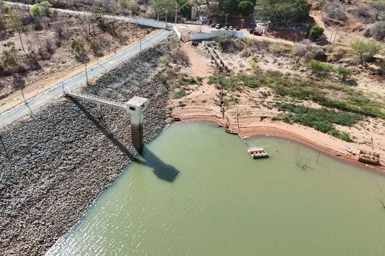
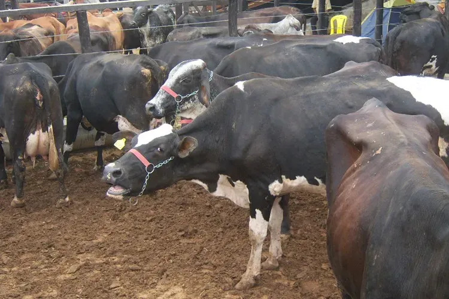

A Companhia de Desenvolvimento dos Vales do São Francisco e do Parnaíba (Codevasf) confirmou a retomada imediata das obras de manutenção e reparo na barragem de Ceraíma, em Guanambi. A garantia foi dada pelo presidente do órgão, Lucas Lobão, após intensas cobranças da gestão municipal e de produtores rurais. A intervenção preventiva era considerada urgente devido a uma vazão de aproximadamente 300 mil litros de água por dia do reservatório, que atualmente opera com apenas 40% de sua capacidade total, gerando forte apreensão sobre uma possível crise hídrica no perímetro irrigado.
O anúncio da volta dos trabalhos foi detalhado pelo secretário de Agricultura de Guanambi, Vanderlei Florêncio. Segundo ele, o serviço vinha se arrastando há cerca de dois anos e acabou paralisado pela empresa contratada, sediada em Belo Horizonte, por entraves financeiros e necessidade de aditivos orçamentários. “A empresa vai retomar porque deu uma parada por problema financeiro, mas já resolveu. O pessoal da empresa já procurou o presidente da cooperativa para reiniciar os trabalhos que tinham paralisado”, afirmou o secretário em entrevista ao site Achei Sudoeste e ao Programa Achei Sudoeste no Ar.
A preocupação das lideranças agrícolas fundamenta-se no impacto socioeconômico do Perímetro Irrigado de Ceraíma para a economia baiana. O vazamento atual compromete água suficiente para irrigar cerca de 200 hectares de lavouras que alimentam a agricultura familiar, feiras locais e programas de merenda escolar. “O perímetro de Ceraíma gera mais de 3 mil empregos e R$ 30 milhões por ano. É um perímetro modernizado onde a água chega por gravidade, sem gasto com energia elétrica. Isso não pode voltar ao passado e acabar”, enfatizou Florêncio.
